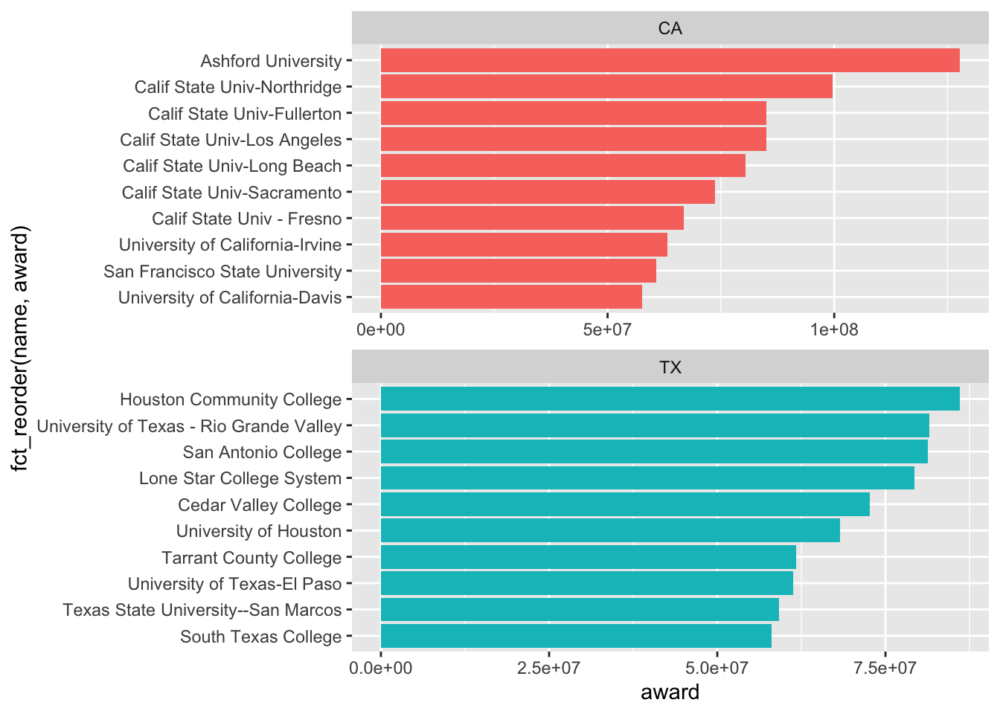
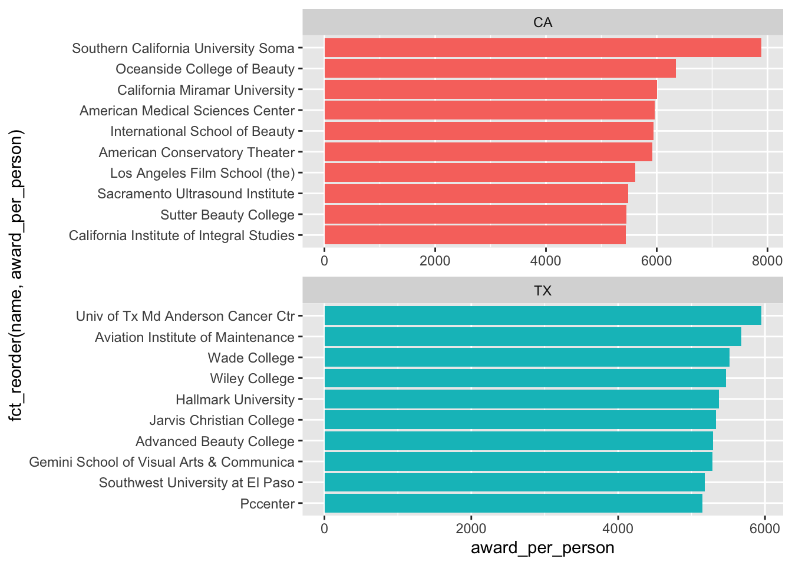
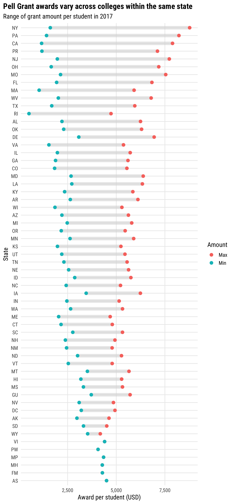

The Pell Grant is a form of need-based federal financial aid that typically does not have to be repaid, which makes it highly desirable. It is awarded by the U.S. Department of Education to help eligible low-income students pay for college costs, including tuition, fees, room and board, and other educational expenses.
# A tibble: 100,474 × 6
state award recipient name session year
<chr> <dbl> <dbl> <chr> <chr> <dbl>
1 AK 197233. 109 Alaska Pacific University 1999-00 1999
2 AK 133148. 69 Alaska Vocational Technical Center 1999-00 1999
3 AK 107287 72 Sheldon Jackson College 1999-00 1999
4 AK 3425149. 1920 University of Alaska - Anchorage 1999-00 1999
5 AK 2441864 1256 University of Alaska at Fairbanks 1999-00 1999
6 AK 353170 221 University of Alaska at Southeast 1999-00 1999
7 AL 5520921. 2369 Alabama Agricultural & Mechanical Uni… 1999-00 1999
8 AL 1548659. 837 Alabama Southern Community College 1999-00 1999
9 AL 7164037. 3236 Alabama State University 1999-00 1999
10 AL 1514341 854 Athens State University 1999-00 1999
# … with 100,464 more rows
# ℹ Use `print(n = ...)` to see more rows
Explore Data
Our goal is to understand how Pell Grant award in the US changes across time and how it is related the location or type of colleges.
Notice that the total award dollar jumped way more than the total number of award recipients in 2009. I’m guessing the dollar awarded per student possibly increased significantly in 2009. Let’s check.
Looks like between 1999 to 2006, the grant awarded per student was stagnant below $2,500.Only from 2009 onwards, the grant awarded per student started to increase year-on-year.
Next, I’d like to understand top states that award the largest Pell Grant, in terms of dollar value and number of recipients. Let’s see what they are in 2017.
# A tibble: 59 × 3
state total_award total_recipient
<chr> <dbl> <dbl>
1 CA 3849733213 938922
2 TX 2357765660 577542
3 FL 2019275162 489360
4 NY 1985470926 452331
5 IL 1038490553 263943
6 AZ 944096562 241733
7 GA 926976350 228079
8 PA 900559055 223787
9 OH 791739717 205307
10 NC 829184523 203071
# … with 49 more rows
# ℹ Use `print(n = ...)` to see more rows
Which schools in California and Texas that awarded the largest Pell Grant in 2017?
pell %>%filter(year ==2017& state %in%c("CA", "TX")) %>%select(state, name, award) %>%group_by(state) %>%slice_max(award, n =10) %>%ungroup() %>%ggplot(aes(award, fct_reorder(name, award), fill = state)) +geom_col(show.legend =FALSE) +facet_wrap(~state, ncol=1, scales ="free")

In the same state, the amount of Pell Grant award differs by university. Does the amount per student also differ a lot across universities? Let’s check again for California and Texas.
pell %>%filter(year ==2017& state %in%c("CA", "TX")) %>%select(state, name, award, recipient) %>%mutate(award_per_person = award / recipient) %>%group_by(state) %>%slice_max(award_per_person, n =10) %>%ungroup() %>%ggplot(aes(award_per_person, fct_reorder(name, award_per_person), fill = state)) +geom_col(show.legend =FALSE) +facet_wrap(~state, ncol=1, scales ="free")

In Texas, the award per student looks roughly similar. In California, we can see a bigger difference across universities.
Okay, so now that I have a rough feel of the data, I’d like to visualize the range of Pell Grant award amount that a student can expect in different states.
Dumbbell Chart: Visualizing variation of award amounts
I want to create a dumbbell chart, inspired by this BBC article (see the chart “Earnings vary across unis even within subject”). The idea is to illustrate the variance of Pell Grant within the same state.
I’ve never created a dumbbell chart before, so I’m following this tutorial as a start.
# A tibble: 6 × 5
state avg diff type award_per_person
<fct> <dbl> <dbl> <chr> <dbl>
1 AK 3866. 1650. max 4627.
2 AK 3866. 1650. min 2978.
3 AL 4186. 4039. max 6247.
4 AL 4186. 4039. min 2208.
5 AR 4165. 3477. max 6114.
6 AR 4165. 3477. min 2637
Apparently, we need two tibbles. Each tibble holds the data for one end of the dumbbell chart. So we need one tibble for max and one for min.
# A tibble: 6 × 5
state avg diff type award_per_person
<fct> <dbl> <dbl> <chr> <dbl>
1 AK 3866. 1650. min 2978.
2 AL 4186. 4039. min 2208.
3 AR 4165. 3477. min 2637
4 AS 4501. 0 min 4501.
5 AZ 3918. 3420. min 2205.
6 CA 4069. 6730 min 1162
Now, the data is ready for basic dumbbell plot. We’ll use ggplot2 package, geom_point() to create the two ends of the dumbbell, and geom_segment() to create a connection between the two ends.
pell_max_min %>%ggplot() +geom_point(aes(x = award_per_person, y = state, color = type),size =2, show.legend =TRUE) +geom_segment(data = min_award,aes(x = award_per_person, y = state,xend = max_award$award_per_person,yend = max_award$state),color ="#aeb6bf",size =2.5,alpha =0.5) +scale_x_continuous(labels = scales::comma) +scale_color_discrete(name ="Amount",labels =c("Max", "Min")) +labs(x ="Award per student (USD)",y ="State",title ="Pell Grant awards vary across colleges within the same state",subtitle ="Award amount per student in 2017") +theme_minimal()

More ideas!
Woohoo, I created my first dumbbell chart.
If I had more time, here are some things I would want to explore:
Distribution of award amount per person in different states. While range is great, distribution can tell more story. Inspiration: Julia Silge’s blog on gender pay gap in the UK.
Investigate the jump in amount awarded per student in 2009. Was it due to change in administration? Was there a new bill to increase higher education subsidy?
Bump chart - to see the award trend for different colleges or states over time.